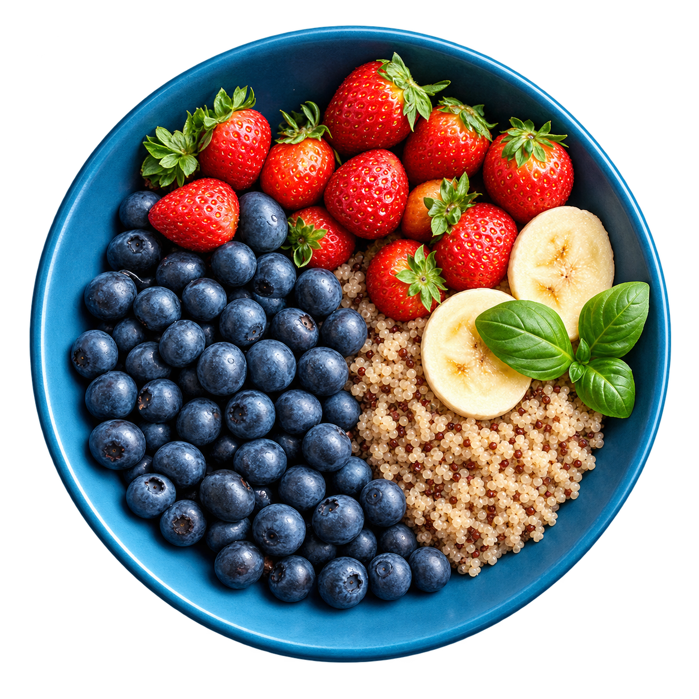
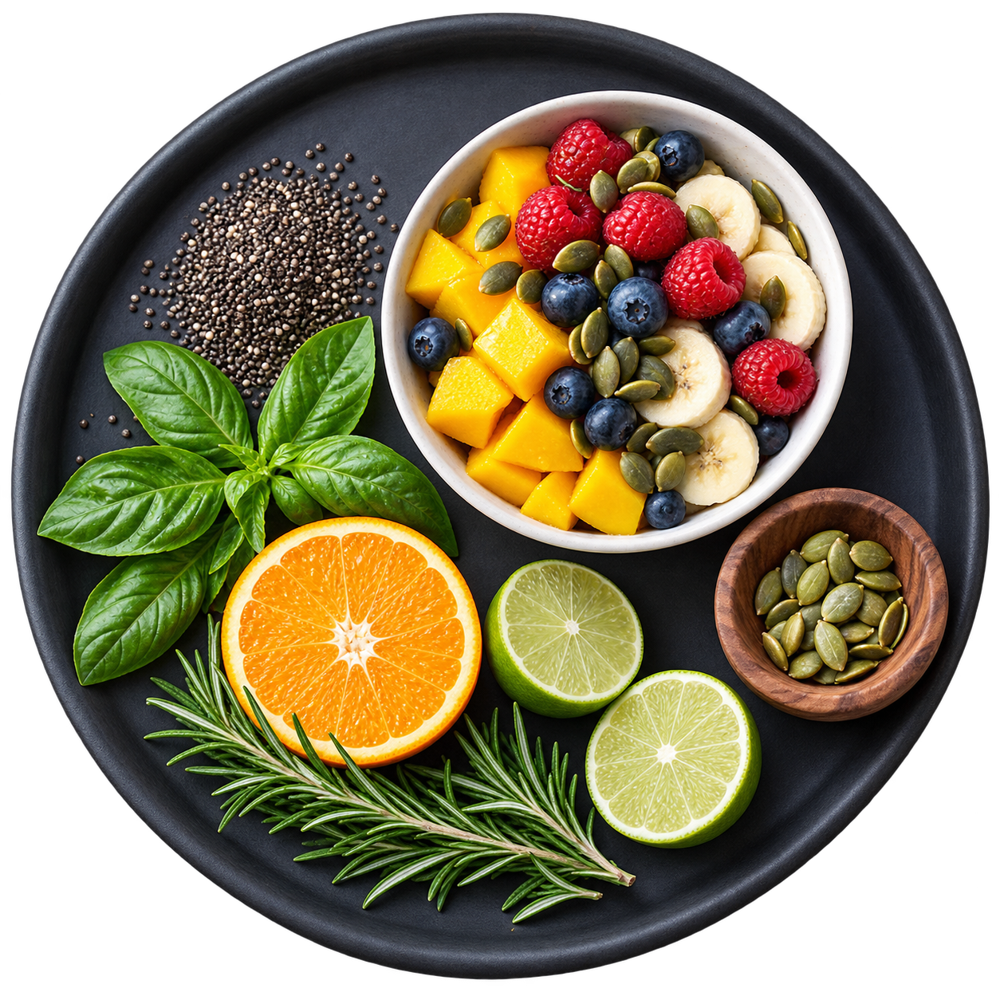

Fresh by nature
Fruit, greens and the simple pleasure of seasonal ingredients.

A little freshness. A lot to look forward to.
Discover colourful ingredients and simple combinations that make everyday eating something to enjoy. Good food, thoughtfully put together, one beautiful bowl at a time.
Fruit, greens and the simple pleasure of seasonal ingredients.
A thoughtful mix of flavour, texture and everyday favourites.
Familiar ingredients, a little care and room to make it yours.
A slow breakfast or a quick lunch. Find a bowl for your rhythm.
Start with ingredients you love.
Add something fresh. Enjoy every bite.

01 / Find your favourite
Three ideas to bring a little colour to your table. Open a bowl to explore the ingredients and make it your own.
Juicy strawberries, blueberries and fluffy quinoa, finished with banana and a little fresh basil.
Try it with your favourite plain yoghurt or a plant-based alternative.
Ripe mango, banana and fresh berries with a handful of pumpkin seeds for texture.
Use the fruit that looks best at your local market.
A bright combination of citrus, leafy greens and a grain of your choice.
Adapt ingredients to your preferences and dietary needs.
02 / Keep it simple
A grain, yoghurt or a handful of greens. Start with what you enjoy.
Bring in seasonal fruit, colourful vegetables or a few fresh herbs.
A little crunch, a squeeze of citrus, and a moment to enjoy it.